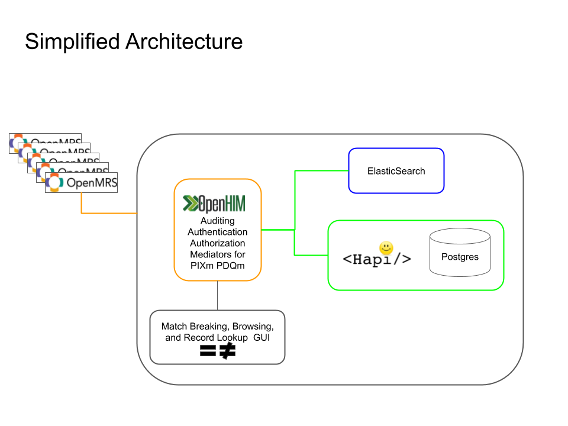

Introduction¶
Summary¶
A Client Registry holds patient identifers and may include patient demographic information. It is a necessary tool for the public health use cases that require managing patients, monitoring outcomes, and conducting case-based surveillance.
Client Registries can be implemented in many ways. This implementation is an open source and open standards-based and offers the ability to:
- Assign and look-up unique identifiers,
- Allow connections from diverse point of service (POS) systems, such as electronic medical record systems (EMRs), that can submit messages in FHIR, and
- Configuration of decision rules around patient matching.
Caution
This implementation does not allow point-of-service systems to get patient demographic information stored in the Client Registry. This is also not a Shared Health Record, nor does it patient clinical data.
Use Cases¶
The CR is one component in a more complex HIS architecture needed to accomplish important use cases, such as:
-
Deduplicating patients Sometimes patients have multiple diagnostic results stored within a POS. The Client Registry will link patients based on configurable decision rules so multiple test results for the same patient can be found.
-
Tracking patients lost to clinical care: EMRs are often not interoperable with one another, resulting in difficulty tracking patients as they move between facilities to seek care. A Client Registry will help data managers to track patients, decreasing instances of duplicate and incomplete records, patients LTFU, and sub-optimal care.
Caution
The Client Registry is not deduplicating or even touching patient clinical and demographic records within point-of-service systems. Instead, it provides a unique identifier to enable use cases like deduplication - which must be an external process.
Architecture¶
The Client Registry is not one application, instead it's a set of applications that work together in the Open Health Information Exchange (OpenHIE) architecture to serve point-of-service systems, like EMRs, insurance mechanisms, and labs.
Caution
This is not an OpenHIE product. It is a prototypical client registry to facilitate discussion among a broad set of stakeholders.
The architecture is made up of:
- The Open Health Information Mediator (OpenHIM): The OpenHIM is the entrypoint for POS systems, and includes authentication (are you who you say you are?), authorization (what roles do you have permission to fulfill?), and auditing of all transactions.
- The HAPI FHIR Server: HAPI is the reference FHIR server in Java and scalable into production environments.
- The ElasticSearch: Elasticsearch is a powerful search engine that is highly performant.
- An optional UI to view and break matches between records, and to select and chain together decision rules around matching algorithms.
